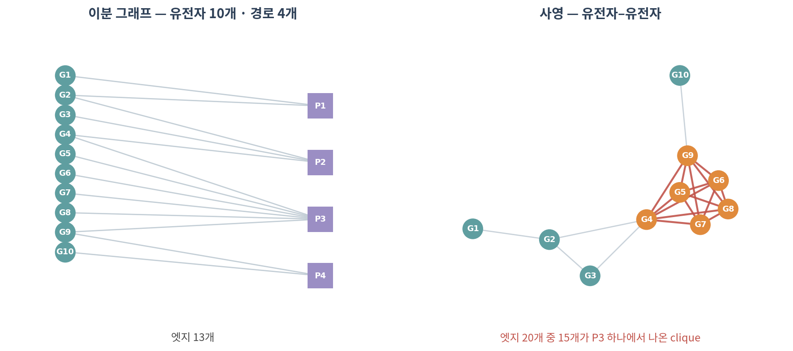
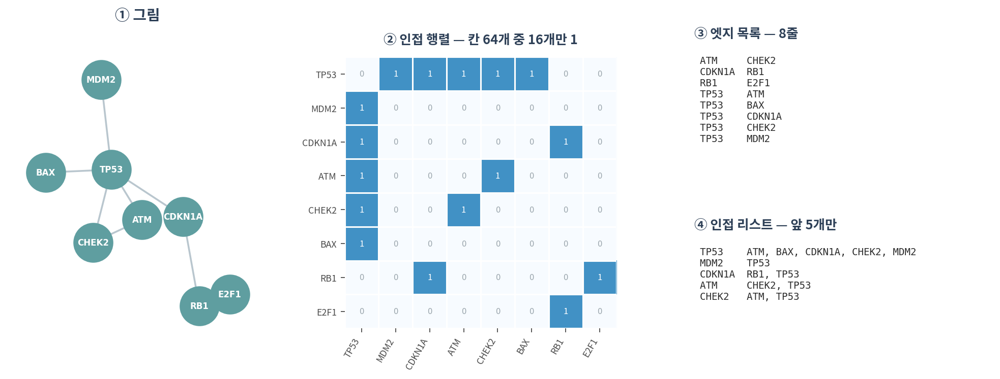
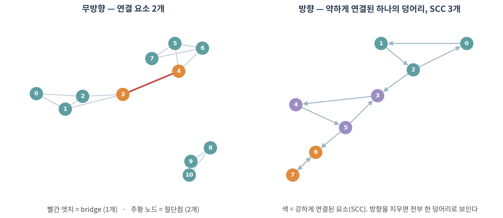

02. 그래프의 표현
그래프의 종류, 표현 3종, 그리고 연결성
Note🎯 학습 목표
이 챕터를 마치면 다음을 할 수 있습니다.
- 무방향·방향·가중·부호·이분 그래프를 구분하고, 내 데이터가 어디에 해당하는지 말할 수 있다
- ⚠️ 이분 그래프를 사영할 때 무엇이 과장되는지 설명할 수 있다
- 인접 행렬 / 엣지 목록 / 인접 리스트를 상황에 맞게 고를 수 있다
- ⚠️ 왜 유전자 2만 개 네트워크를 밀집 행렬로 만들면 안 되는지 숫자로 말할 수 있다
- 연결 요소, bridge, 절단점을 찾고 그 생물학적 의미를 해석할 수 있다
- 방향 그래프에서 SCC와 WCC를 구분할 수 있다
🤔 생각해볼 질문
유전자 2만 개짜리 네트워크를
matrix(0, 20000, 20000)으로 만들면 메모리가 얼마나 필요할까요? 그리고 그중 실제로 1인 칸은 몇 개일까요?
1. 그래프의 종류 🧩
1) 다섯 가지 구분
| 구분 | 무엇이 다른가 | 생물학 예시 |
|---|---|---|
| 무방향 / 방향 | 관계가 대칭인가 | PPI(무방향) vs 전사조절(방향) |
| 가중 | 엣지에 숫자가 붙는가 | STRING confidence, 상관계수 |
| 부호 | 엣지가 +/− 를 갖는가 | 활성화 vs 억제 |
| 이분 | 노드가 두 종류인가 | 유전자–경로, 환자–표현형 |
| 다중 / 자기 루프 | 같은 쌍에 엣지가 여럿인가, 자기 자신과 연결되는가 | 여러 증거 채널, 자가조절 |
- ⚠️ 방향은 나중에 전부 바뀝니다 — 방향 그래프에서는 “A에서 B로 갈 수 있다”가 “B에서 A로 갈 수 있다”를 뜻하지 않습니다
- ⚠️ 부호를 버리는 실수 — 활성화와 억제를 같은 엣지로 취급하면, 신호전달 경로의 결론이 뒤집힐 수 있습니다
- 💡
networkx에서는nx.Graph/nx.DiGraph/nx.MultiGraph로 명시합니다. 잘못 고르면 조용히 틀린 답이 나옵니다
2) 이분 그래프와 사영
이분 그래프(bipartite graph) — 노드가 두 집단으로 나뉘고, 엣지는 집단 사이에만 있습니다.
- 유전자 ↔︎ 경로, 환자 ↔︎ 표현형, 약물 ↔︎ 표적, 시료 ↔︎ 미생물 종
사영(projection) — 한쪽 집단만의 그래프로 접는 것. “같은 경로에 있는 유전자끼리 연결”

Warning사영은 정보를 잃고, 동시에 부풀립니다
- 경로 하나에 유전자 k개가 들어 있으면, 사영하면 k(k−1)/2개의 엣지가 한꺼번에 생깁니다
- 위 그림에서 P3(유전자 6개) 하나가 만든 엣지가 15개 — 전체 20개 중 75%
- → 리보솜이나 스플라이소좀처럼 구성원이 많은 복합체 하나가 네트워크를 지배하게 됩니다
어떻게 할 것인가:
- ✅ 가능하면 이분 그래프 상태로 분석하세요 (사영하지 않는 방법이 있습니다)
- ✅ 사영이 꼭 필요하면 가중치를 남기세요.
weighted_projected_graph는 공유 경로 수를 weight로 줍니다 - ✅ 구성원이 지나치게 많은 경로(예: > 200개)는 제외하는 것이 관례입니다 — GSEA에서 유전자 집합 크기를 제한하는 것과 같은 이유
2. 표현 3종 📦

1) 무엇을 언제 쓰는가
| 표현 | 쓰기 좋은 곳 | 비용 |
|---|---|---|
| 인접 행렬 | 행렬 연산, 스펙트럴 방법(05), 네트워크 전파(06) | 메모리 O(n²) |
| 엣지 목록 | 저장, 전달, Cytoscape import, DB | 이웃 찾기가 느림 |
| 인접 리스트 | 큰 sparse 네트워크 순회, BFS/DFS | 행렬 연산 불가 |
- 💡 셋은 같은 그래프입니다. 상황에 따라 변환해 쓰는 것이 정상입니다
- 실무에서는 보통 엣지 목록으로 받아서 → 인접 리스트(networkx)로 분석하고 → 필요할 때만 희소 행렬로 변환합니다
2) ⚠️ 실제 네트워크는 극단적으로 sparse하다
유전자 20,000개, 엣지 500,000개인 현실적인 PPI 네트워크를 담아봅니다.
| 담는 방법 | 메모리 | 배수 |
|---|---|---|
| 밀집 행렬 (float64) | 2.98 GB | 기준 |
| 밀집 행렬 (int8) | 381 MB | 1/8 |
| 희소 행렬 (CSR, float64) | 11.5 MB | 1/265 |
| 희소 행렬 (CSR, bool) | 4.8 MB | 1/635 |
| 엣지 목록 (int32 두 컬럼) | 3.8 MB | 1/800 |
- 이 네트워크의 밀도는 0.25% — 칸 400개 중 1개만 1입니다
- ⚠️ R에서
matrix(0, 20000, 20000)은 약 3GB를 잡습니다. 노트북에서 세션이 죽는 흔한 이유입니다 - ✅ R은
Matrix::sparseMatrix, Python은scipy.sparse를 쓰세요
Tip왜 하필 0.25%인가
생물학 네트워크가 sparse한 것은 우연이 아닙니다.
- 단백질 하나가 물리적으로 접촉할 수 있는 상대의 수에는 한계가 있습니다
- 대사 반응은 효소가 정해진 기질에만 작용합니다
- → 차수(degree)는 노드 수가 늘어도 비례해서 늘지 않습니다. 03에서 다시 다룹니다
⚠️ 예외: 상관 기반 네트워크는 임계값을 낮추면 얼마든지 dense해집니다. 이것은 생물학이 아니라 우리의 선택입니다(🔗 01).
3) 차수(degree)
- 차수 = 한 노드에 붙은 엣지 수. 인접 행렬에서는 그 행의 합
- 방향 그래프에서는 in-degree와 out-degree로 나뉩니다
- in-degree = 0 → source (전사인자처럼 조절만 하는 노드)
- out-degree = 0 → sink (조절만 받는 노드)
- 무방향 그래프에서 차수의 총합 = 2 × 엣지 수 (모든 엣지가 두 번 세어지므로)
3. 연결성 🔗

1) 연결 요소와 거대 요소
- 연결 요소(component) — 서로 도달할 수 있는 노드들의 묶음
- 거대 요소(giant component) — 대부분의 노드를 품는 하나의 큰 덩어리
- 찾는 방법은 BFS(너비 우선 탐색) — 아무 노드에서 시작해 이웃을 차례로 방문하고, 남은 노드에서 다시 시작
⚠️ 실무에서 자주 겪는 일:
- PPI를 임계값으로 자르면 거대 요소 + 고립 노드 수천 개가 나옵니다
- 대부분의 분석(최단경로, 중심성, 전파)은 거대 요소 안에서만 의미가 있습니다
- ✅ 그래서 관례적으로 거대 요소만 남기고 분석합니다 — 그리고 몇 개를 버렸는지 보고해야 합니다
2) Bridge와 절단점
- Bridge — 제거하면 연결 요소가 늘어나는 엣지
- 절단점(articulation node) — 제거하면 연결 요소가 늘어나는 노드
생물학적 해석:
- 두 기능 모듈을 잇는 유일한 연결 → 신호전달의 병목 지점 후보
- ✅ 03의 매개 중심성(betweenness)과 통하는 개념입니다
- ⚠️ 하지만 “bridge니까 중요하다”는 네트워크가 완전하다는 가정 위에서만 성립합니다. 아직 발견되지 않은 엣지 하나가 bridge를 없앨 수 있습니다(🔗 07)
3) 방향이 있으면 ’연결’이 둘로 갈라진다
| 뜻 | 비유 | |
|---|---|---|
| 강한 연결(SCC) | 양방향 모두 도달 가능 | 왕복 가능한 도로망 |
| 약한 연결(WCC) | 방향을 무시하면 연결됨 | 일방통행만 있는 동네 |
- 위 그림 오른쪽: 방향을 지우면 한 덩어리지만, SCC는 3개입니다
- 신호전달 네트워크에서 SCC는 되먹임 고리(feedback loop)를 뜻합니다 — 04의 모티프와 직결됩니다
- ⚠️
nx.connected_components()는 방향 그래프에 쓰면 에러가 납니다.strongly_또는weakly_를 명시해야 합니다
Tip🐍 실습 — STRING 네트워크를 읽고 구조 파악하기
Colab에서 실행합니다. 설치는 90. Colab 환경 설정 참고.
import pandas as pd, numpy as np, networkx as nx
import scipy.sparse as sp
# ── 1. 엣지 목록 읽기 ────────────────────────────────────────────────
# STRING에서 유전자 목록을 검색해 TSV로 내려받은 파일
df = pd.read_csv("string_interactions.tsv", sep="\t")
G = nx.from_pandas_edgelist(df, "node1", "node2", edge_attr="combined_score")
print(f"노드 {G.number_of_nodes()}개, 엣지 {G.number_of_edges()}개")
# ── 2. 얼마나 sparse한가 ─────────────────────────────────────────────
n, m = G.number_of_nodes(), G.number_of_edges()
print(f"밀도 {2*m/(n*(n-1)):.4%}")
A_sparse = nx.to_scipy_sparse_array(G) # CSR
dense_gb = n * n * 8 / 1024**3
sparse_mb = (A_sparse.data.nbytes + A_sparse.indices.nbytes
+ A_sparse.indptr.nbytes) / 1024**2
print(f"밀집이면 {dense_gb:.2f} GB / 희소면 {sparse_mb:.1f} MB")
# ── 3. 연결성 ────────────────────────────────────────────────────────
comps = sorted(nx.connected_components(G), key=len, reverse=True)
print(f"연결 요소 {len(comps)}개, 거대 요소 {len(comps[0])}개 "
f"({len(comps[0])/n:.1%})")
giant = G.subgraph(comps[0]).copy() # ← 이후 분석은 여기서만
print("bridge:", len(list(nx.bridges(giant))))
print("절단점:", len(list(nx.articulation_points(giant))))
# ── 4. 이분 그래프와 사영 ────────────────────────────────────────────
# gene2pathway: gene, pathway 두 컬럼
B = nx.Graph()
B.add_nodes_from(g2p["gene"].unique(), bipartite=0)
B.add_nodes_from(g2p["pathway"].unique(), bipartite=1)
B.add_edges_from(g2p.itertuples(index=False, name=None))
P = nx.bipartite.weighted_projected_graph(B, g2p["gene"].unique())
print(f"이분 엣지 {B.number_of_edges()} → 사영 엣지 {P.number_of_edges()}")
# 경로 크기별로 몇 개의 엣지를 만들었는지 (⚠️ 큰 경로가 범인)
sizes = g2p.groupby("pathway").size().sort_values(ascending=False)
(sizes * (sizes - 1) // 2).head(10)확인할 것:
- ⚠️ 거대 요소가 전체의 몇 %인가 — 절반도 안 되면 임계값이 너무 높습니다
- ⚠️ 사영 엣지의 몇 %가 상위 경로 3개에서 나왔는가
- 방향 그래프(예: 전사조절)를 쓴다면
nx.strongly_connected_components()로 되먹임 고리 찾아보기
📝 요약
- 무방향/방향, 가중, 부호, 이분, 다중 — ⚠️ 방향과 부호를 버리면 결론이 뒤집힐 수 있습니다
- ⚠️ 이분 그래프 사영은 큰 경로 하나가 clique을 만들어 네트워크를 지배합니다. 가중치를 남기고 큰 경로는 제외하세요
- 인접 행렬 / 엣지 목록 / 인접 리스트는 같은 그래프의 다른 담는 법 — 필요에 따라 변환하는 것이 정상
- ⚠️ 유전자 2만 개 네트워크는 밀집 3GB, 희소 12MB. 밀도 0.25%. 밀집 행렬을 만들지 마세요
- 연결 요소 중 거대 요소만 분석하는 것이 관례 — ✅ 단, 몇 개를 버렸는지 보고할 것
- bridge와 절단점은 모듈 사이 병목 후보. ⚠️ 네트워크가 완전하다는 가정 위에서만 성립
- 방향 그래프에서 SCC는 되먹임 고리를 뜻함.
connected_components를 그대로 쓰면 에러
➕ 더 읽을거리
교과서
Newman M. Networks. 2nd ed. Oxford University Press; 2018. (2–6장: 표현과 연결성)
도구
NetworkX — Graph 자료구조 문서
scipy.sparse 행렬 형식 안내
Matrix 패키지 (R의 희소 행렬)
이분 그래프와 사영
Zhou T, Ren J, Medo M, Zhang YC. Bipartite network projection and personal recommendation. Phys Rev E. 2007.